LABORATORIO 3
Subneteo, Configuración y simulación de LAN basada en IPv4
Carlos Farouk Abdalá Rincón
Gabriel David Jimenez Mosquera
Julián Felipe Pulido Castro
1. Monte la topología lógica en la sala de redes emulado (topología física) en CISCO Packet Tracer. Utilice los modelos de Switch CISCO Serie 2960 y Router Cisco 2811.
Se observa la tipología utilizada para este laboratorio, en la parte física se aprecia el uso de 4 racks, los cuales nos servirán para almacenar los dispositivos requeridos entre los cuales están los 4 switches necesarios, 1 router que permite la interconexión de diferentes subredes, y los 4 patch panels de interconexión, mediante los cuales se conectaran los enlaces entre switches y los pc’s que se conecten con otro switch que no sea el número 1.
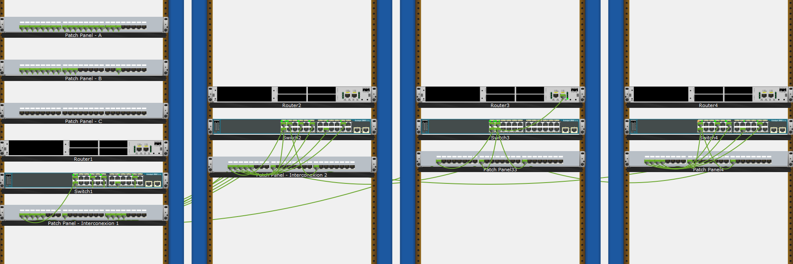
También se planteó la distribución de forma lógica de manera que asemejara la disposición requerida para el laboratorio.
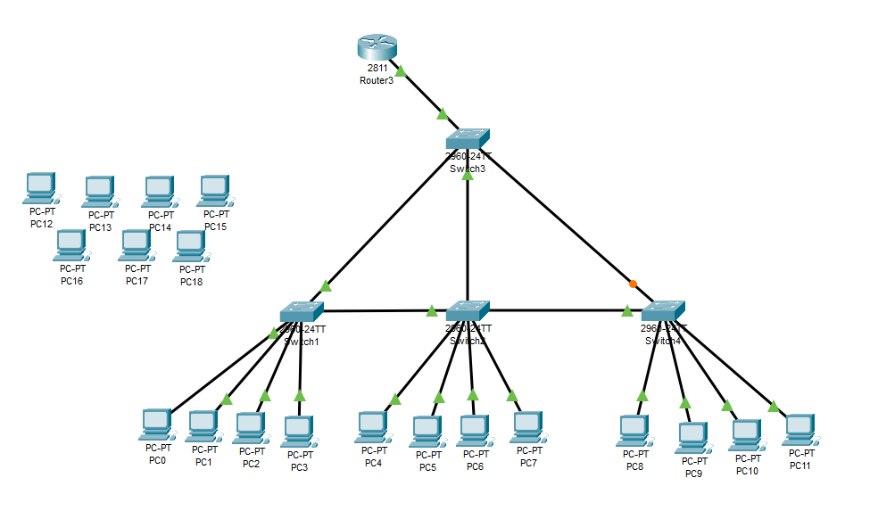
2. El administrador de red dispone el espacio de direcciones IP 190.30+X.0.0/16 (donde X es su número de grupo de trabajo.). El administrador le pide a Ud. y a su equipo plantear una propuesta de división de redes para las subredes presentadas en la topología de red (Figura 1), teniendo en cuenta la información de red de la Tabla 1 y que cada VLAN requiere 254 clientes.
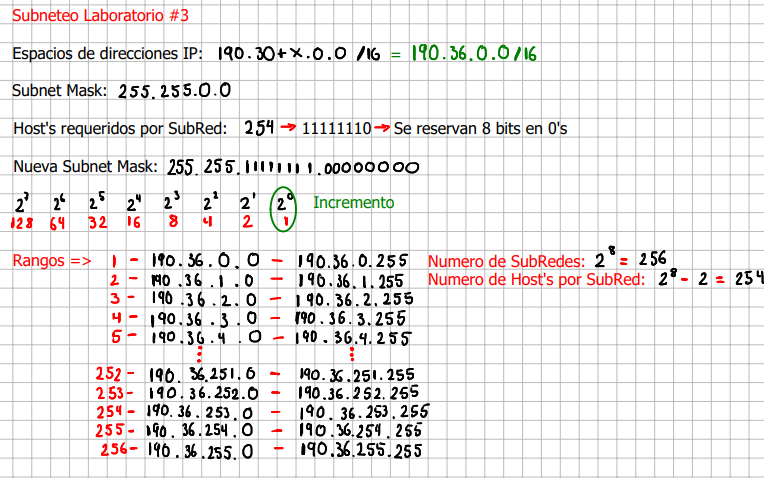
3. Una vez planteada la división en subredes, se realiza la tabla de direccionamiento de toda la topología de red:
Luego de realizar el Subneteo se distribuyeron las diferentes subredes creadas, según los requerimientos de vlans solicitados, obteniendo este resultado.
4. Se realizó la configuración básica de los switches y router CISCO de acuerdo con el procedimiento o lista de pasos propuestos en las lecturas recomendadas. Ademas, se asignó manualmente a cada una de las interfaces de red las direcciones IP de acuerdo a la tabla de direccionamiento construida en el paso anterior.
Para la configuración de los switches y routers se siguió el proceso recomendado durante la clase, el cual consta de generar y crear los logins para la consola, el modo de configuración y el telnet, cuyo password siempre será “cisco”, a cada switch se le cambio el hostname a “SW-X” siendo X el numero de switch que se estuviera configurando, de igual manera se realizo ese cambio de nombre al router, a todos los dispositivos se les agrego el banner motd, y sus direcciones IP correspondientes teniendo en cuenta la tabla del punto anterior.
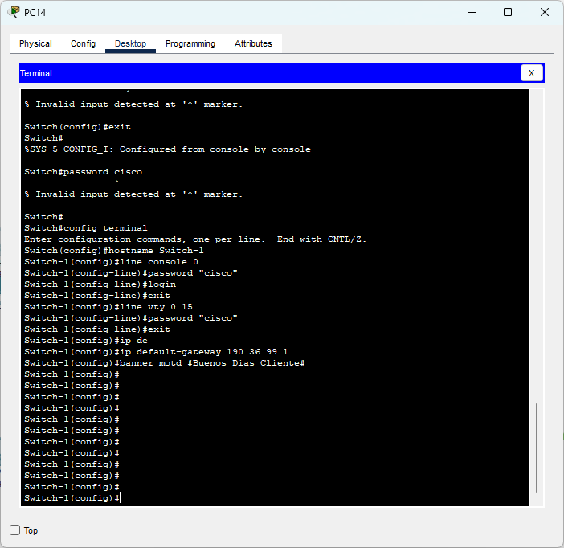
5. Verifique que se haya asignado correctamente las direcciones IP a cada una de las interfaces NIC de los PCs. ¿Qué comando TCP/IP debe utilizar? Capture la verificación realizada.
Para realizar la confirmación de que las IP´s estén correctamente asignadas en cada PC se necesita el uso del comando ipconfig, el cual mostrara la configuración actual del PC en términos de su direccion IP, su mascara de subred, su default Gateway, entre otros.
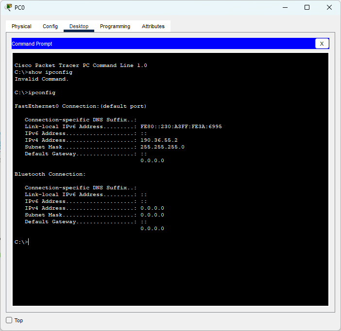 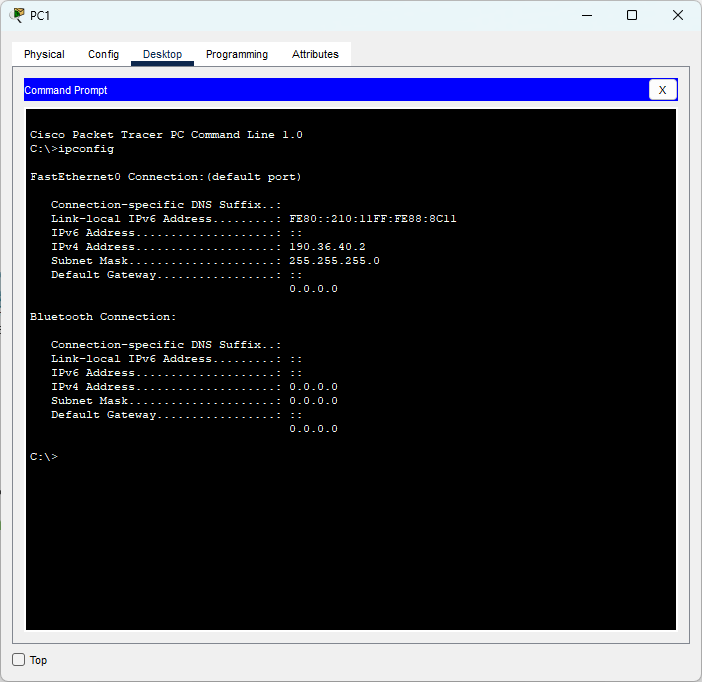
6. Cree y configure las VLANs de acuerdo con el procedimiento desarrollado en clase y según la asignación de VLAN mostrada en la Tabla 1.
Lo primero será entrar a cada switch y crear las Vlan’s correspondientes asignándoles sus respectivas interfaces:
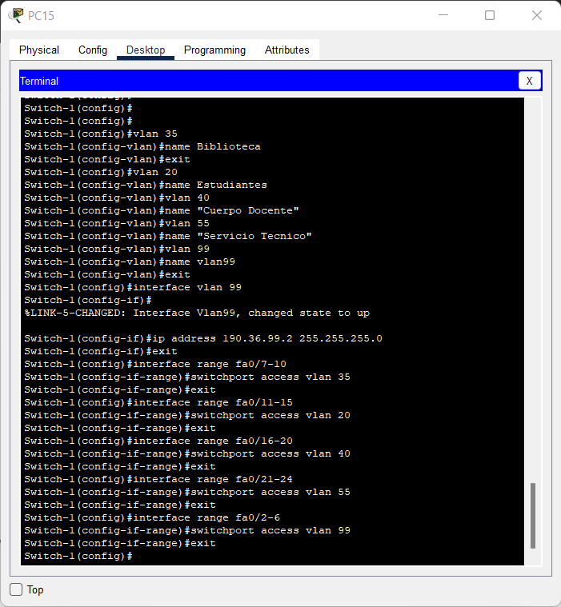
Este proceso se repetirá en los 4 switches. Es importante tener en cuenta que a la Vlan 99 de cada switch se le asignara una dirección IP que pertenezcan a la misma subred entre ellas, además de tener en cuenta que la creación de la Vlan 99 en cada switch debe configurarse de la siguiente manera:
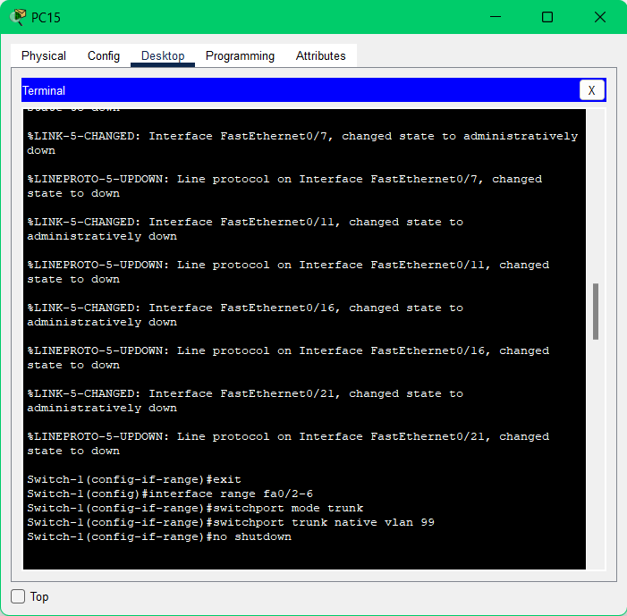
Haciendo que estos puertos sirvan como troncales. A continuación, habrá que crear la separación de Vlan’s en el Router de la siguiente manera:
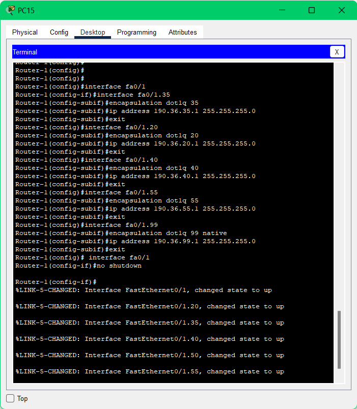
Se debe asignar el valor de la Vlan a cada división de la interfaz principal, a cada Vlan se le deba realizar su respectivo proceso de encapsulación incluida la Vlan 99 que se deberá especificar su característica de “Native” y se le deberá asignar una dirección IP a cada Vlan de acuerdo con su número, en el caso de la nativa, la Vlan deberá contar con la misma identificación de subred que las Vlan 99 de los switches que será 190.36.99.X. Tras realizar lo anterior, las Vlan estarán creadas.
7. Verifique que se hayan creado y configurado correctamente las VLANs. ¿Qué comando CISCO debe utilizar? Capture la verificación realizada.
Para verificar la creación de las Vlan’s podemos usar el comando “show vlan brief” en los switches que nos mostrará el número de cada Vlan, su nombre, el estatus de cada una y las interfaces que tiene asignadas. A continuación, un ejemplo del uso de este comando:
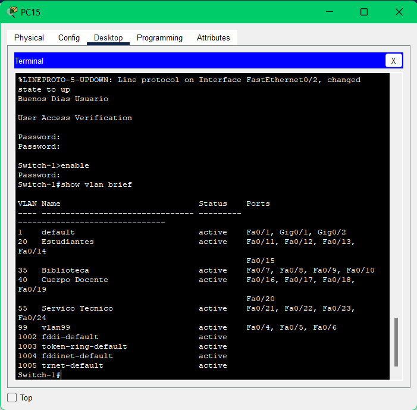
En el caso del Router, podemos comprobar la “Division” de la interfaz usando el comando “show ip interface brief” de la siguiente manera:
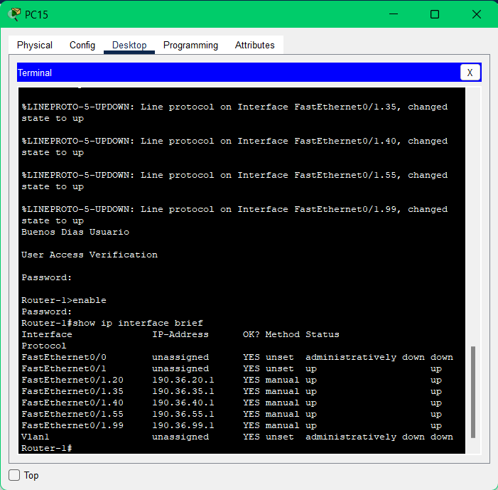
En este caso podemos ver la división de la Interfaz Fa0/1 para cada Vlan y su respectiva dirección IP.
8. Configure la comunicación interVLANs en la topología de red. ¿En qué interface del router se debe configurar? ¿Cuántas subinterfaces se deben crear y configurar? ¿Qué protocolo de encapsulamiento se debe configurar?
Para configurar las interVlans es necesario configurar la interfaz Fa0/1 de nuestro router ingresando a la interfaz en la consola y creando las sub interfaces poniéndole un punto a la interfaz principal y el número de la vlan o subred requerida, por ejemplo, para la Vlan 35 se ingresará a la interfaz seleccionando la interfaz Fa0/1.35. Al entrar a cada interfaz se deberá asignar la respectiva encapsulación dot1q de cada Vlan incluyendo la 99 que irá acompañada de la específicación "Native". Para el desarrollo de este proyecto será necesario crear 5 sub-interfaces, cada una para cada Vlan incluyendo la 99. Es importante tener en cuenta que durante este proceso se deberá especificar la dirección IP y Subnet Mask de cada sub-interfaz.
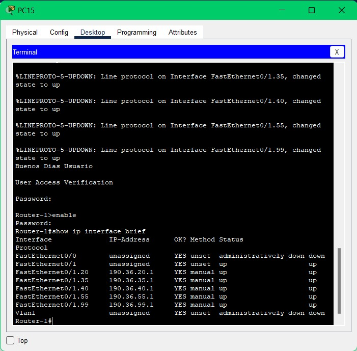 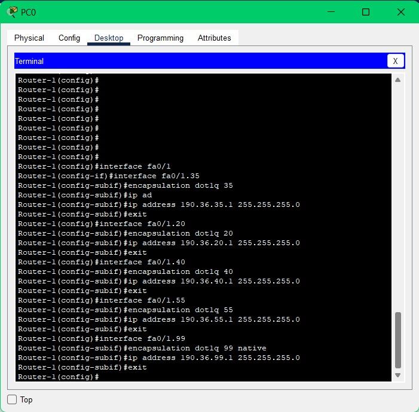
9. Verifique que haya conectividad entre las PCs pertenecientes a la misma VLAN. ¿Qué comandos TCP/IP debe utilizar? ¿Los PCs tienen conectividad con su puerta de enlace? ¿Por qué? ¿Existe conectividad entre PCs pertenecientes a VLAN distintas? ¿Por qué? Capture la verificación realizada
Si existe conexión entre las PCs pertenecientes a la misma VLAN ya que al utilizar el comando ping en el PC_4 poniendo la dirección ip del PC_8 teniendo en cuenta que los dos PCs hacen parte de la VLAN 55: Servicio técnico se reciben correctamente todos los paquetes.
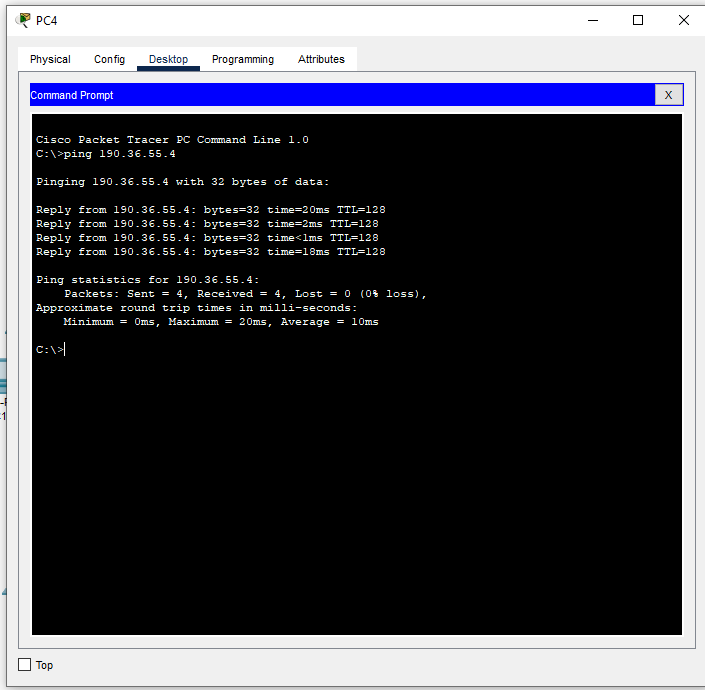
Ademas, si se tiene conexión con la puerta de enlace porque el pc necesita que este le permita el acceso a la otra red. En este caso, nuestra puerta de enlace es 190.36.99.1 y se logran enviar todos los paquetes de manera correcta.
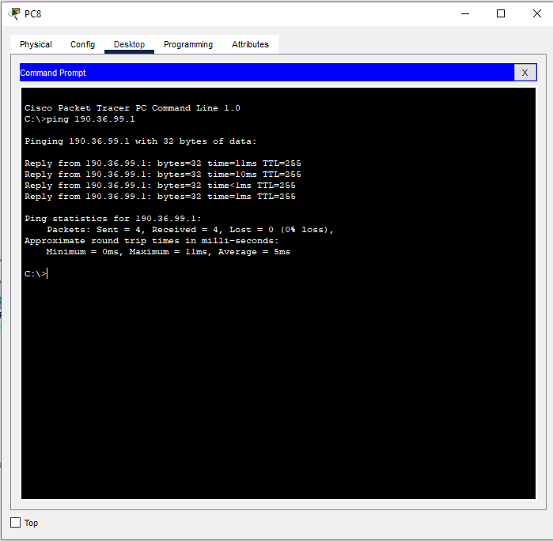
Ahora bien, al intentar conectar el PC_2 al PC_3 que es perteneciente a otra VLAN si hay conexión ya que están todas las configuraciones y se está conectado a el switch raíz de jerarquía de las VLANs al router. En este caso, si pasan 3 paquetes por lo que se logra una conexión entre VLANS.
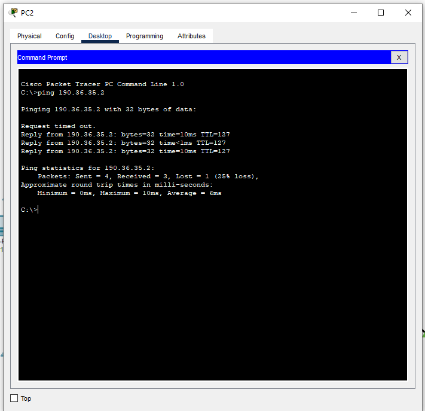
10. Verifique que sea posible hacer Telnet desde un PC a los demás switches y al router. ¿Qué comando TCP/IP debe utilizar? Capture la verificación realizada.
Para esta parte, tomamos cualquier pc y ejecutamos el comando telnet con los cuatro switches y el router para verificar conexión.
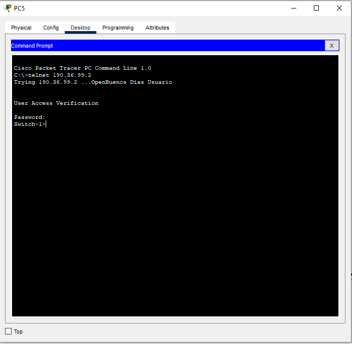
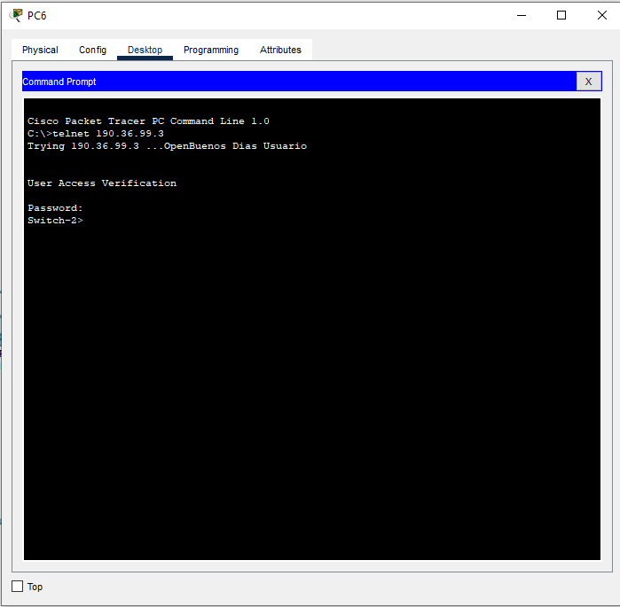 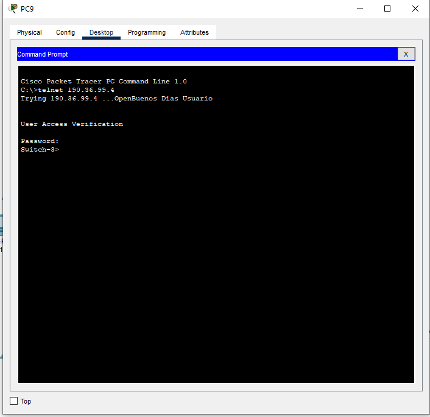
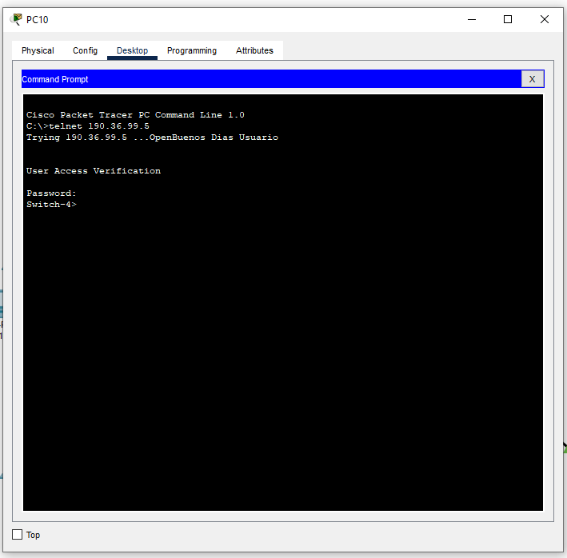
11. Analice el tráfico generado en la LAN al verificar la conectividad de un PC a otro y de un PC al gateway. Adicionalmente, entre dos PCs pertenecientes a VLANs distintas. Justifique su análisis utilizando capturas con el simulador de Cisco Packet Tracer (vista simulación).
Al hacer el análisis del trafico generado en la LAN entre dos PCs podemos ver como los paquetes viajan haciendo la ruta del PC_0 al PC_4 encapsulando los datos en el tipo ARP y cuando ocurre el ping y hay conexión el tipo cambia a ICMP continuando la ruta.
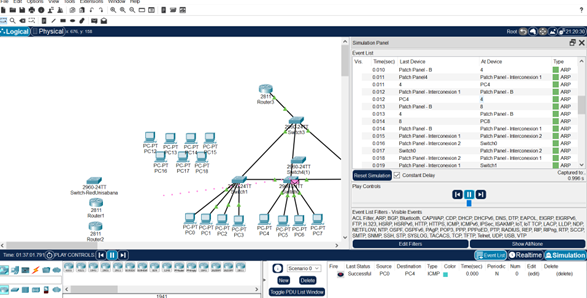
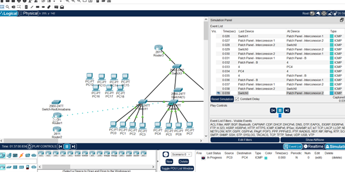
Cuando se hace el análisis de trafico entre un PC y el default Gateway se puede ver como se van cambiando los distintos servicios a medida que los paquetes hacen su ruta logrando claramente la conexión entre el default Gateway y el PC.
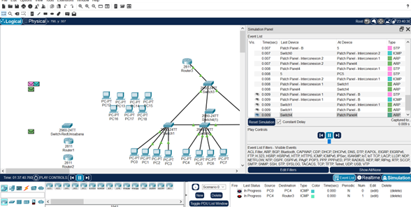
Finalmente, para que haya conexión con pcs de diferente VLAN se utiliza el protocolo STP que ayuda a los paquetes a viajar por toda la red.
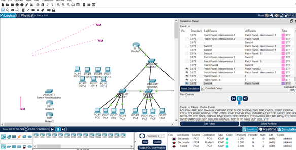
Desafíos que se Presentaron Durante el Desarrollo
Los principales desafíos encontrados fueron las configuraciones de los switches y el router con sus respectivas VLAN y la implementación del subneteo teniendo en cuenta las especificaciones dadas, ya que estos procesos son fundamentales para el correcto desarrollo de la practica y sin una buena realización la red no serviria.
Conclusiones del Laboratorio
Para las conclusiones, podemos comenzar por mencionar la funcionalidad del Subneteo, el cual fue crucial para el desarrollo total del laboratorio, ya que, por medio de esto, pudimos realizar las subredes solicitadas por el cliente, también sirvió al momento de asignar las direcciones IP a los diferentes switches, y el default Gateway del router. De esta manera la diferente configuración de cada subred, donde a cada host se le asigno su subred diferente y su porción de host correspondiente.
Referencias
[1] Jeremy D. Cioara. Subnetting Examples [En línea]. Disponible en: https://bit.ly/3v6crh
[2] Llorca Alcón, Manuel. "Configuración de una VLAN mediante Switches CISCO". RiuNet repositorio UPV. https://riunet.upv.es/handle/10251/1424?tl=a (accedido el 23 de septiembre de 2022).
[3] "Cómo configurar un switch de red para su empresa en 6 pasos". Cisco. https://www.cisco.com/c/es_mx/solutions/small-business/resource-center/networking/how-to-setup-network-switch.html (accedido el 23 de septiembre de 2022).
[4] Cisco, "Networking Essentials. Module Group 5."
[5] Juan M. Aranda, “Basic configuration”, Slides.
[6] Jeremy D. MicroNugget: How to Select Subnet Sizes for VLANs [En línea]. Disponible en: https://bit.ly/3BuXHeV